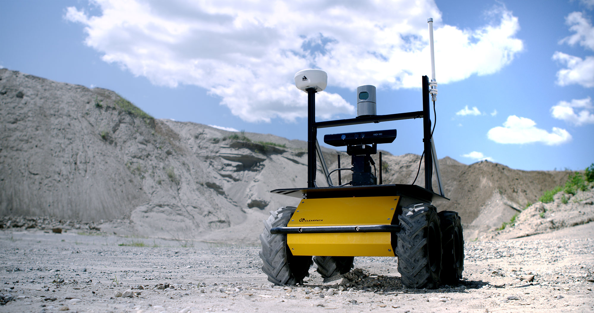
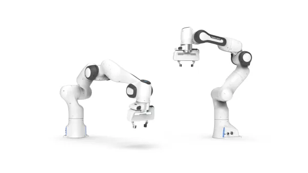

Robots
Husky UGV
{kind=link}
Husky UGV is a tough unmanned ground vehicle designed for robotics research in outdoor environments. Its all-terrain tires and powerful motors allow it to conquer snow, sand, mud, and steep hills.
Specifications
{kind=link}
Dimensions: 67 x 39 x 99 cm
Weight (with batteries): 50kg
Speed: 3.6km/h
Wheel Radius: 223mm (8.77 in)
Wheel Base: 544mm (21.4 in)
Track Width: 420mm (16.5 in)
Wheel Size: 330mm (13 in)
QCar

QCar, the feature vehicle of the Self-Driving Car Research Studio, is an open-architecture, scaled vehicle designed for academic research. It is equipped with a wide range of sensors including LIDAR, 360-degree vision, depth sensor, IMU, encoders, as well as user-expandable IO. The vehicle is powered with an NVIDIA® Jetson™ TX2 supercomputer that gives you exceptional speed and power efficiency.
Specifications
Dimensions: 39 x 19 x 20 cm
Weight (with batteries): 2.7kg
Camera: Intel D435 RGBD Camera
Maxium Steering Angle: ±30° (0.5236 radians)
Wheel Base: 0.256m
Tire Diameter: 0.066m
Track Width: 0.170m
Franka Research 3
{kind=link}
Franka Research 3 is a world-class robotic system that is power-sensitive and allows researchers to both use user-friendly robotic functions and access the robot’s control and learning capabilities in an easy way.
Specifications
Degree of Freedom (DoF): 7
Payload: 3kg
Maximum Reach: 855mm
- Joint Position Limits:
A1, A3: -166/166 deg
A2: -105/105 deg
A4: -176/-7 deg
A5: -165/165 deg
A6: 25/265 deg
A7: -175/175 deg
Weight: ~ 17.8 kg
Husky + Franka Research 3
{kind=link}
The Husky + FR3 model is a powerful robot that combines a vehicle with a robotic arm.